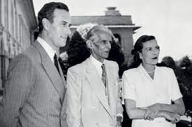
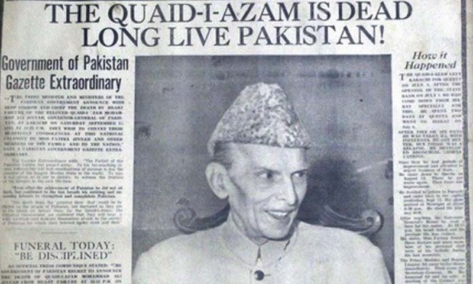

TRADE UNIONIST
Jinnah was also a supporter of working class causes and an active trade unionist.[47] He was elected President of All India Postal Staff Union in 1925 whose membership was 70,000.[47] According to All Pakistan Labour Federation's publication Productive Role of Trade Unions and Industrial Relations, being a member of Legislative Assembly, Jinnah pleaded forcefully for rights of workers and struggled for getting a "living wage and fair conditions" for them.[48] He also played an important role in enactment of Trade Union act of 1926 which gave trade union movement legal cover to organise themselves.[48]
RISING LEADER

In 1857, many Indians had risen in revolt against British rule. In the aftermath of the conflict, some Anglo-Indians, as well as Indians in Britain, called for greater self-government for the subcontinent, resulting in the founding of the Indian National Congress in 1885. Most founding members had been educated in Britain, and were content with the minimal reform efforts being made by the government.[49] Muslims were not enthusiastic about calls for democratic institutions in British India, as they constituted a quarter to a third of the population, outnumbered by the Hindus.[50] Early meetings of the Congress contained a minority of Muslims, mostly from the elite.[51]
Jinnah devoted much of his time to his law practice in the early 1900s, but remained politically involved. Jinnah began political life by attending the Congress's twentieth annual meeting, in Bombay in December 1904.[52] He was a member of the moderate group in the Congress, favouring Hindu–Muslim unity in achieving self-government, and following such leaders as Mehta, Naoroji, and Gopal Krishna Gokhale.[53] They were opposed by leaders such as Tilak and Lala Lajpat Rai, who sought quick action towards independence.[54] In 1906, a delegation of Muslim leaders, known as the Simla Delegation, headed by the Aga Khan called on the new Viceroy of India, Lord Minto, to assure him of their loyalty and to ask for assurances that in any political reforms they would be protected from the "unsympathetic [Hindu] majority".[55] Dissatisfied with this, Jinnah wrote a letter to the editor of the newspaper Gujarati, asking what right the members of the delegation had to speak for Indian Muslims, as they were unelected and self-appointed.[53] When many of the same leaders met in Dacca in December of that year to form the All-India Muslim League to advocate for their community's interests, Jinnah was again opposed. The Aga Khan later wrote that it was "freakishly ironic" that Jinnah, who would lead the League to independence, "came out in bitter hostility toward all that I and my friends had done ... He said that our principle of separate electorates was dividing the nation against itself."[56] In its earliest years, however, the League was not influential; Minto refused to consider it as the Muslim community's representative, and it was ineffective in preventing the 1911 repeal of the partition of Bengal, an action seen as a blow to Muslim interests.[57]
Although Jinnah initially opposed separate electorates for Muslims, he used this means to gain his first elective office in 1909, as Bombay's Muslim representative on the Imperial Legislative Council. He was a compromise candidate when two older, better-known Muslims who were seeking the post deadlocked. The council, which had been expanded to 60 members as part of reforms enacted by Minto, recommended legislation to the Viceroy. Only officials could vote in the council; non-official members, such as Jinnah, had no vote. Throughout his legal career, Jinnah practised probate law (with many clients from India's nobility), and in 1911 introduced the Wakf Validation Act to place Muslim religious trusts on a sound legal footing under British Indian law. Two years later, the measure passed, the first act sponsored by non-officials to pass the council and be enacted by the Viceroy.[58][59] Jinnah was also appointed to a committee which helped to establish the Indian Military Academy in Dehra Dun.[60]
In December 1912, Jinnah addressed the annual meeting of the Muslim League although he was not yet a member. He joined the following year, although he remained a member of the Congress as well and stressed that League membership took second priority to the "greater national cause" of an independent India. In April 1913, he again went to Britain, with Gokhale, to meet with officials on behalf of the Congress. Gokhale, a Hindu, later stated that Jinnah "has true stuff in him, and that freedom from all sectarian prejudice which will make him the best ambassador of Hindu–Muslim Unity".[61] Jinnah led another delegation of the Congress to London in 1914, but due to the start of the First World War in August 1914, found officials little interested in Indian reforms. By coincidence, he was in Britain at the same time as a man who would become a great political rival of his, Mohandas Gandhi, a Hindu lawyer who had become well known for advocating satyagraha, non-violent non-co-operation, while in South Africa. Jinnah attended a reception for Gandhi where the two men met and talked with each other for the first time. Shortly afterwords, Jinnah returned home to India in January 1915.[62]
FAREWELL TO CONGRESS
Jinnah's moderate faction in the Congress was undermined by the deaths of Mehta and Gokhale in 1915; he was further isolated by the fact that Naoroji was in London, where he remained until his death in 1917. Nevertheless, Jinnah worked to bring the Congress and League together. In 1916, with Jinnah now president of the Muslim League, the two organisations signed the Lucknow Pact, setting quotas for Muslim and Hindu representation in the various provinces. Although the pact was never fully implemented, its signing ushered in a period of co-operation between the Congress and the League.[63][51]
During the war, Jinnah joined other Indian moderates in supporting the British war effort, hoping that Indians would be rewarded with political freedoms. Jinnah played an important role in the founding of the All India Home Rule League in 1916. Along with political leaders Annie Besant and Tilak, Jinnah demanded "home rule" for India—the status of a self-governing dominion in the Empire similar to Canada, New Zealand and Australia, although, with the war, Britain's politicians were not interested in considering Indian constitutional reform. British Cabinet minister Edwin Montagu recalled Jinnah in his memoirs, "young, perfectly mannered, impressive-looking, armed to the teeth with dialectics, and insistent on the whole of his scheme".[64]
Marriage certificate of Jinnah and Rattanbai Petit[30]
In 1918, Jinnah married his second wife Rattanbai Petit ("Ruttie"), 24 years his junior. She was the fashionable young daughter of his friend Sir Dinshaw Petit, and was part of an elite Parsi family of Bombay.[30] There was great opposition to the marriage from Rattanbai's family and the Parsi community, as well as from some Muslim religious leaders. Rattanbai defied her family and nominally converted to Islam, adopting (though never using) the name Maryam Jinnah, resulting in a permanent estrangement from her family and Parsi society. The couple resided at South Court Mansion in Bombay, and frequently travelled across India and Europe. The couple's only child, daughter Dina, was born on 15 August 1919.[30] The couple separated prior to Ruttie's death in 1929, and subsequently Jinnah's sister Fatima looked after him and his child.[65]
Relations between Indians and British were strained in 1919 when the Imperial Legislative Council extended emergency wartime restrictions on civil liberties; Jinnah resigned from it when it did. There was unrest across India, which worsened after the Jallianwala Bagh massacre in Amritsar, in which British Indian Army troops fired upon a protest meeting, killing hundreds. In the wake of Amritsar, Gandhi, who had returned to India and become a widely respected leader and highly influential in the Congress, called for satyagraha against the British. Gandhi's proposal gained broad Hindu support, and was also attractive to many Muslims of the Khilafat faction. These Muslims, supported by Gandhi, sought retention of the Ottoman caliphate, which supplied spiritual leadership to many Muslims. The caliph was the Ottoman Emperor, who would be deprived of both offices following his nation's defeat in the First World War. Gandhi had achieved considerable popularity among Muslims because of his work during the war on behalf of killed or imprisoned Muslims.[66][67][68] Unlike Jinnah and other leaders of the Congress, Gandhi did not wear western-style clothing, did his best to use an Indian language instead of English, and was deeply rooted in Indian culture. Gandhi's local style of leadership gained great popularity with the Indian people. Jinnah criticised Gandhi's Khilafat advocacy, which he saw as an endorsement of religious zealotry.[69] Jinnah regarded Gandhi's proposed satyagraha campaign as political anarchy, and believed that self-government should be secured through constitutional means. He opposed Gandhi, but the tide of Indian opinion was against him. At the 1920 session of the Congress in Nagpur, Jinnah was shouted down by the delegates, who passed Gandhi's proposal, pledging satyagraha until India was independent. Jinnah did not attend the subsequent League meeting, held in the same city, which passed a similar resolution. Because of the action of the Congress in endorsing Gandhi's campaign, Jinnah resigned from it, leaving all positions except in the Muslim League
INTERLUDE IN ENGLAND
The alliance between Gandhi and the Khilafat faction did not last long, and the campaign of resistance proved less effective than hoped, as India's institutions continued to function. Jinnah sought alternative political ideas, and contemplated organising a new political party as a rival to the Congress. In September 1923, Jinnah was elected as Muslim member for Bombay in the new Central Legislative Assembly. He showed much skill as a parliamentarian, organising many Indian members to work with the Swaraj Party, and continued to press demands for full responsible government. In 1925, as recognition for his legislative activities, he was offered a knighthood by Lord Reading, who was retiring from the Viceroyalty. He replied: "I prefer to be plain Mr Jinnah."[72]
In 1927, the British Government, under Conservative Prime Minister Stanley Baldwin, undertook a decennial review of Indian policy mandated by the Government of India Act 1919. The review began two years early as Baldwin feared he would lose the next election (which he did, in 1929). The Cabinet was influenced by minister Winston Churchill, who strongly opposed self-government for India, and members hoped that by having the commission appointed early, the policies for India which they favoured would survive their government. The resulting commission, led by Liberal MP John Simon, though with a majority of Conservatives, arrived in India in March 1928.[73] They were met with a boycott by India's leaders, Muslim and Hindu alike, angered at the British refusal to include their representatives on the commission. A minority of Muslims, though, withdrew from the League, choosing to welcome the Simon Commission and repudiating Jinnah. Most members of the League's executive council remained loyal to Jinnah, attending the League meeting in December 1927 and January 1928 which confirmed him as the League's permanent president. At that session, Jinnah told the delegates that "A constitutional war has been declared on Great Britain. Negotiations for a settlement are not to come from our side ... By appointing an exclusively white Commission, [Secretary of State for India] Lord Birkenhead has declared our unfitness for self-government."[74]
Birkenhead in 1928 challenged Indians to come up with their own proposal for constitutional change for India; in response, the Congress convened a committee under the leadership of Motilal Nehru.[1] The Nehru Report favoured constituencies based on geography on the ground that being dependent on each other for election would bind the communities closer together. Jinnah, though he believed separate electorates, based on religion, necessary to ensure Muslims had a voice in the government, was willing to compromise on this point, but talks between the two parties failed. He put forth proposals that he hoped might satisfy a broad range of Muslims and reunite the League, calling for mandatory representation for Muslims in legislatures and cabinets. These became known as his Fourteen Points. He could not secure adoption of the Fourteen Points, as the League meeting in Delhi at which he hoped to gain a vote instead dissolved into chaotic argument.[75]
After Baldwin was defeated at the 1929 British parliamentary election, Ramsay MacDonald of the Labour Party became prime minister. MacDonald desired a conference of Indian and British leaders in London to discuss India's future, a course of action supported by Jinnah. Three Round Table Conferences followed over as many years, none of which resulted in a settlement. Jinnah was a delegate to the first two conferences, but was not invited to the last.[76] He remained in Britain for most of the period 1930 through 1934, practising as a barrister before the Privy Council, where he dealt with a number of India-related cases. His biographers disagree over why he remained so long in Britain—Wolpert asserts that had Jinnah been made a Law Lord, he would have stayed for life, and that Jinnah alternatively sought a parliamentary seat.[77][78] Early biographer Hector Bolitho denied that Jinnah sought to enter the British Parliament,[77] while Jaswant Singh deems Jinnah's time in Britain as a break or sabbatical from the Indian struggle.[79] Bolitho called this period "Jinnah's years of order and contemplation, wedged in between the time of early struggle, and the final storm of conquest".[80]
In 1931, Fatima Jinnah joined her brother in England. From then on, Muhammad Jinnah would receive personal care and support

next